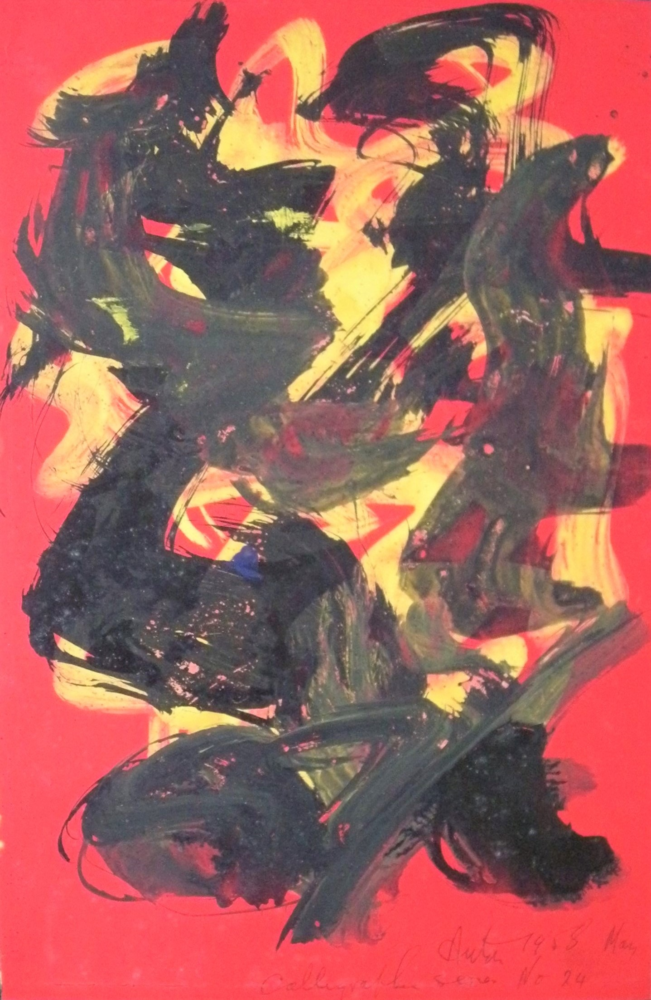

Victor Anton
1909 – 1980
Artist Biography
Victor Anton was born in Worthing, Sussex. A career journalist, he took up sculpting untutored in 1949. Known as a Constructivist, Anton worked in a variety of materials including watercolours, sculpture and Perspex reliefs. A member of Groupe Espace in the 1950s, he said he was experimenting with light in pursuit of the problems of equilibrium whilst his work become increasingly hard edged, abstract and minimalist. Anton had solo shows in London at Gimpel Fils in 1953, Grabowski Gallery 1963 and Lords Gallery 1965 and he had a retrospective at University Centre, Birmingham in 1974. Group shows included exhibitions at the Drian Gallery and ICA. In 1992 Belgrave Gallery included a 1962 sculpture in its British Abstract Art of the 1950s and 1960s exhibition. Anton’s son set up a website as a virtual Museum for his father’s work and his art is also held by public galleries in New York, Israel, Lodz in Poland and the Museum of Contemporary Art in Skopje, Macedonia.

Calligraphic Series No.24, 1958